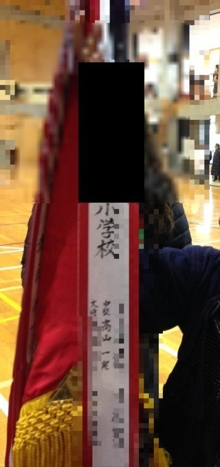
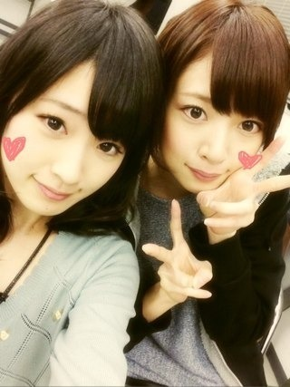
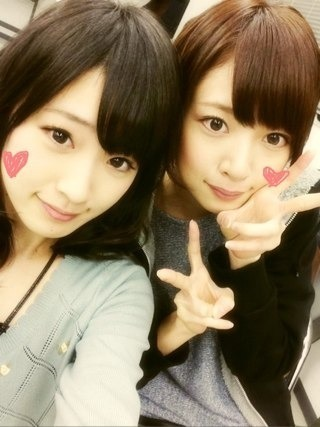

2013/0128Mon（´-`）.｡oO(かずみん×136
こんばんは(*^_^*)
いつも沢山のコメント
ありがとう♪
昨日の乃木どこは生誕でしたね！
ヒット曲メドレーは
やっぱり明菜ちゃん♡
声に少しエフェクトをかけて
放送しているみたいなので、
なんだろう...いつも放送は
どきどき＆恐怖で見てます。笑
でも収録はとっても楽しい♪
ちなみに今日の乃木どこ収録は
2月、そう、私の生誕祭もありました♪
わくわく'(*ﾟ▽ﾟ*)'
お楽しみに...☆
-------
昨日は剣道の試合に行って来ました！
後輩の剣道を久しぶりに見に、
そして私の同期が当時の監督と
社会人大会に出ると言うので
応援に( ´ ▽ ` )
なんと、私のいた道場の後輩
女子も男子もアべック優勝しました！
いやぁ...久しぶりに見たら
みんな昔より強くなってて(T_T)
嬉しかった！！！
優勝旗を見たら私たちの現役時代の
名前が残っていました。

なんとも懐かしいです。笑
中学の後輩も準優勝でした。
本当強くなっててびっくり！
思わず涙が出そうになりました(T_T)
私が小6の時に小1だった女の子たちは
見事に5人いたのですよ！
人数が揃うっていいですね。
その子たちの代が今です(T_T)♡
みんな美人さんなの！
綺麗な剣道をしていたので
この先も楽しみです！
ちなみに顧問はうちらの時に
講師だった先生です。
厳しかったけど、卒業してから
ありがたみがわかるものです。笑
小さい頃からお世話になった先生方に
沢山会えました。
みんな変わってなかった！！
大人になって、
年をとってもずっと続けられる剣道って
素晴らしいなと思いました。
みんな私の乃木坂での活動も、
娘のように応援してくれて、
本当に嬉しいです！
今の私があるのは、
本当に素晴らしい方達に囲まれて
育ったからだと思うので、
そのことを忘れないで、これからも
生きていこうと思います！
---------
今日は今SamuraiELOさんの
取材が終わりました〜！
2月24日発売の4月号です(*^_^*)
洋服の系統もいつもとは違った形で
楽しかったです♪
よかったら手にとって見て下さい^ ^
最後にななみんと！
 

またね( ^ω^ )ノ


コメント(505)
カラオケのやつやっぱり効果が入ってたんだね
歌ってる時の顔いいね！
かずみーん！！！
乃木坂ってどこ？みました！
かずみん歌うまいっすね！
かずみんの生誕祭楽しみ(^○^)
ELO楽しみにしとくね(^_^)/
京都の握手会早く行ってかずみんと握手したいよ～(≧∀≦)
もう２月生誕の撮影したんやな
まりかも誕生日やし早く見たい(笑)
ケツも誕生日やし俺も誕生日やし２月誕生日多いww
昨日の乃木どこ見たで
かずみん昭和の曲似合うわ
ほなねﾉｼ
やっほー( ´ ▽ ` )ﾉ
お久しぶりのコメントです(｀_´)ゞ笑
雑誌ちゃんとチェックしますね！
かずみん可愛いよかずみん( *´艸｀)笑
じゃあまたね( ´ ▽ ` )ﾉ笑
かずみーんおれ今日乃木坂行ったよー(´･Д･)」
会いたかったぜヽ(；▽；)ノ
乃木神社も行ったよー(^-^)
おれも中学の先生に会いたい！
今度会ってこよ♪
おれもかずみんのことずっと応援してるからねー！
これからも頑張ってね(´･Д･)」
昨日の明菜は、
明菜みたく、
ドスきいててカッコよかったよー。
すごくサマになってた。
かずみん用に
ちゃんと明菜は入れてあんだな。
また聴かせて。
頑張ってきまーす
気迫と気迫のぶつかり合い…
竹刀の当たる音…
見に行きたいな～
やまちゃんは今、仲間と飲みに行ってるよ～(笑)
(^-^)/
昨日の乃木どこ、DESIREが流れた瞬間かずみんを探したよ(笑)ってか、やっぱかずみんには昭和歌謡が良く似合う！
(￣▽￣)b
来月の生誕祭も楽しみにしてんな！
で、剣道見に行ったんだ！
かずみんのいた道場は強豪揃いだったんだね！かずみんは謙遜しとるけど、かずみんもさぞかし強かったんだろうね！
(o^-')b
いつか芸能人剣道大会とかに出て欲しいな！かずみんの剣道が見てみたい！
雑誌もチェケラッチョするね！
じゃ、今日も１日お疲れちゃんね！
またね！
♪(ｏ・ω・)ノ))
優勝旗ってやっぱいいもんだよね！
かずみん剣道すごいじゃん！
そして後輩たちも活躍してくれるとほんと自分のことのようにうれしいよね＼(^o^)／
かずみん頑張ってね！
いつか山口百恵さんできるといいですね(*´∀｀*)
かずみさんのがじ剣道みてみたいです！
乃木どこで取り扱ってくんねーかなぁ
雑誌手にとって見ますね＼(^o^)／
毎回思うけど、歌ってるかずみんかっこいい！
憧れる！！
後輩思いでさすがかずみん！
剣道はかっこいい！
最近のかずみんがかっこよすぎて…(笑)
2月24日たのしみ！
生誕祭
楽しみにしてるね笑
てか
かずみんのところ
どんだけ
才色兼備なん？
やばあーーー笑
ではでは。
明日も1日頑張りまいやん♪
やっぱ 歌 凄い
顔が違う。
本気(まじ)。
いつの日か
FULLで聴きたいよ (゜_゜)(。_。)
剣道の後輩達も凄いね！高山魂？受け継いでるんだろうね＊(o^∀^o)
乃木坂も二期が入る事だし、高山魂注入しないとね？ o(^-^)o
じゃあ頑張って下さい！
ではでは御免ヤス。
俺も剣道やってた！
なつかしーなー笑
スキすぎる♪
引退してからありがたみが分かるの私もそう思う！
部活がなつかしい(^^)♪
高校では何部に入ろうかなっ
剣道すごいやん。
俺もサッカーしてたよ。
いちよキャプテンなり。
弱かったけど、でも楽しかったな。
ずっといい思い出だよね。
かずみさんの生誕楽しみ。
かずみさんの歌も楽しみだよ。
早々の更新嬉しいです。
大分体調も良くなった様子ですね。
2月の生誕祭、ほんと楽しみ。
小さい頃はどんな子だったん
だろう～と妄想が・・・
早く見たいです。
取り急ぎのコメでした。
では、また。
いつかぼくと、剣道しましょう。笑
かずみんに関しては
エフェクトかけないほうがいいよ
smurai ELO楽しみだね
２月生誕祭もどんなエピソードが
出てくるのか大いに楽しみだね
頑張って!!
頑張って!!
応援なう〜
め〜ん
ど〜う
こて〜
じんちゅ〜・・・・・うぇ〜痛そうだ。
僕も剣道経験者というか、今もやっているけど、
剣道の試合は見ていると血が騒ぐよね。
強い人の試合見ると、自分も強くなった気がするし。。。気のせいなんだけどね。(^_^;)
乃木どことかで、
かずみんが剣道やれるロケやんないかな～
早々の更新嬉しいです。
大分体調も良くなった様子ですね。
2月の生誕祭、ほんと楽しみ。
小さい頃はどんな子だったん
だろう～と妄想が・・・
早く見たいです。
取り急ぎのコメでした。
では、また。
昨日の乃木どこ、かずみんかっこよかったですよ～
声も合っていて上手かったです
2月の生誕祭の収録してきたんですね
見るのすっごく楽しみです
かずみん、どんな子だったんだろ～
あと体調は良くなりましたか？
最近すごく寒いですよね
こじらせないように気をつけてくださいね
＊ミニーちゃん大好きなコペでした＊
剣道いいよねっ( ^ω^ )
試合前の緊張
ハンパないけど、笑
高校も剣道頑張って
全国目指すから
応援よろしくねっ＼(^o^)／
乃木どこは絶対見るから( *｀ω´)
かずみん、剣道熱心だね♡！
あたしゎねー、バトンを昔からやってたよ☆！
後輩が強くなってたり成長を感じると
なんか感動するし、なんか自分も頑張ろ。
って気持ちになるよねっヽ(●＾▽＾●)ﾉ！
昔怖かった先生も、卒業してからが
どんだけ素晴らしい先生だったかとか有り難みが
感じるよね！
キツくて、怒られてばっかで怖い先生で、
ちょっと苦手だった先生でも
卒業した時にその先生の大切さが分かるだよね( ︠ु௰︡ू)笑
かずみんの生誕祭のやつ
早く見たい♡！
かずみんの赤ちゃんの時の時代…♡笑
絶対可愛いだろうねヽ(｡>▽<｡)ﾉ！
写真が可愛い過ぎっす。
2月の生誕祭も楽しみだー！(^o^)
剣道かっこいい！ 俺も空手やってます！
武道っていいよね(^-^)
またブログの更新待ってるよー！
アメイジング！＼(^o^)／
昨日の乃木どこ、さすがかずみん歌うまかったー！！
かずみんが本格的に剣道やってる姿、いつかみてみたいです( ´_ゝ`)
ななみんとのツーショットかわいい！
待ち受けにした！笑
では明日もがんばってね＼(^o^)／
DESIRE歌ってる時のかずみんカッコ良すぎ、中森明菜に入ってる感じだったね(笑)
すげぇ良かった(^_^)b
今日、生誕祭の収録だったんだね
2月が待ち遠しいよ～(>｡<)
後輩が活躍するって、自分のことのように嬉しいよね
(〃▽〃)
優勝旗に自分の名前があるなんて
歴史に名を刻みましたね
(^_^)v
アメイジング＼(^_^)／
ゆうし。だよーぃ！
剣道かっけーよね！
あんまり分かんないけど
小手ヤバいかっけー！
準優勝おめでとうやね！
一実に剣道教えてもらおうかな！
乃木どこ見たよ！
かずみんかっこよかったよ～♡
歌も上手いし憧れるっ
２月の生誕祭も楽しみにしてるねっ!!
剣道の大会見に行ったんだ！
後輩が成長してるのって嬉しいよね～♪
私も大会とか練習見に行って成長感じて
本当に嬉しいっ!!
雑誌も見つけたら見てみまーす(*^∀^)ﾉ~
こんばんは♪
昨日の乃木どこ見ました！
最高でした(笑)
２月の生誕祭も楽しみにしています(^-^ゞ
かずみんの周りの人たちも剣道メッチャクチャ強いんですね( ; ゜Д゜)
来月のsamuraiELO楽しみにしています！
明日も頑張ってください(^-^)/
では、お休みなさい(-.-)Zzz・・・・
新しいかわいい〜！
乃木どこ
確かにエフェクトがかかってたね
でも、すごいよかったよ
やっぱりかずみんは、明菜ちゃんだね
私は高校の時、ハンドボールやっててさ
当時は厳しくて
嫌でしょうがなかったけど
今、思い出すと楽しかったなー(｡vωv｡｀)
頑張った時の思い出って
いつまでも忘れないよねー。
奈々未と一実さんの写メ
元気出たよー(｡ >艸<)
ありがとね！！
お仕事頑張ってねー(o´・ω-)b
お疲れ様です(>_<)
生誕祭でかずみんの試合してる姿が観れるのを楽しみにしてますo(^-^)o
かずみんはジャンプで連載されていた『クロガネ』っていう漫画知ってますか？
今週で終わっちゃったんですけど…
かずみん、格好良かったよ!!
かずみんの生誕祭も楽しみ(*^_^*)
へばっまずな(^-^)/~~
かずみん生誕祭楽しみにしてます(^^)/
剣道の試合…いいですね!!(b^ー°) 自分は従兄弟が剣道やってた時は色々みにいってましたが今はなかなか見にいってはいないです…(^_^;)
かずみん剣道本当に好きなんだね!!(≧∇≦) かずみんが剣道でテッペンとれると信じています!!!(b^ー°)
かずみんぐー＼(^o^)／笑
…アメイジングとかけました(笑)
取材おつかれさま♪
発売したら見に行くね！
ちょうど受験終わる頃です(>_<)
剣道女子ってかっこいいですよね！
優勝おめでとうございます♪
コメントする